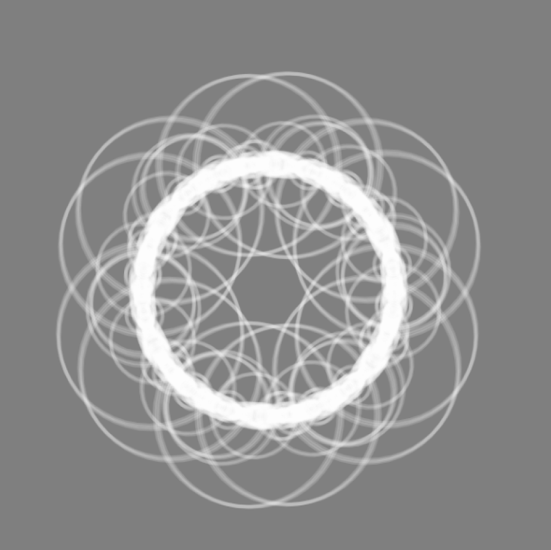
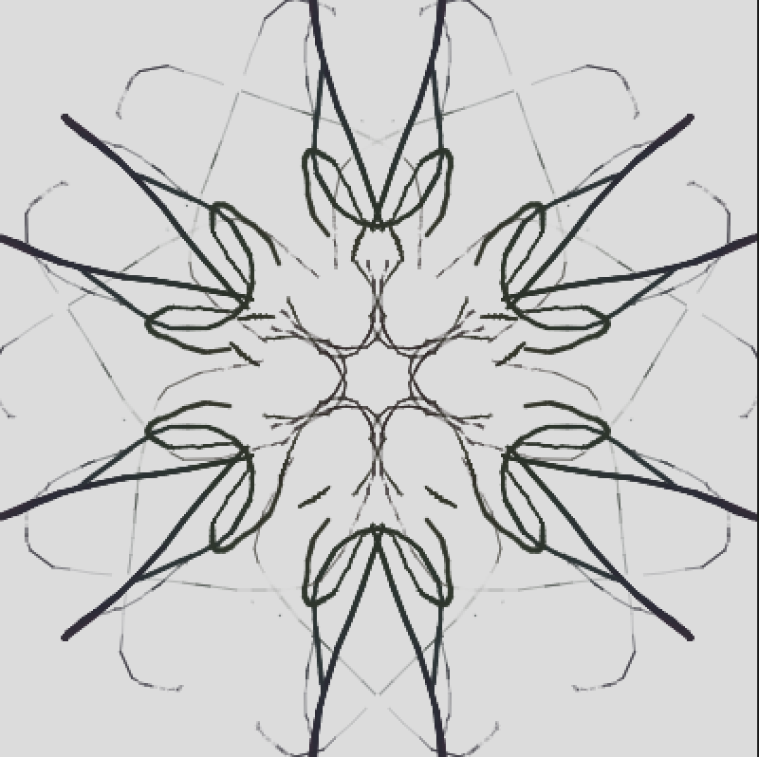
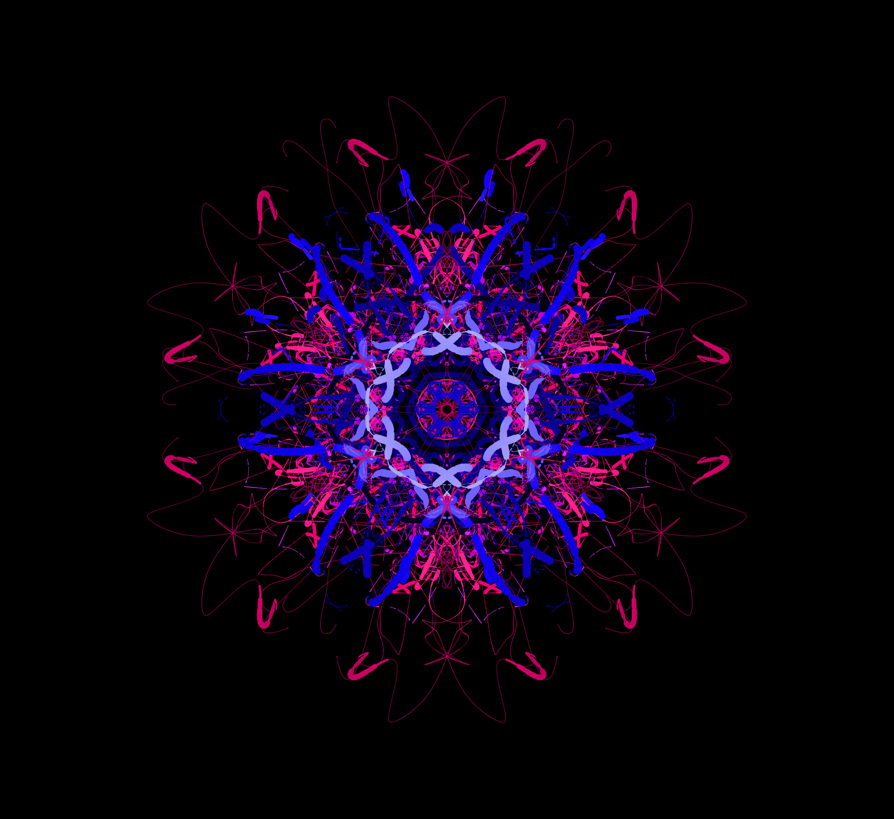
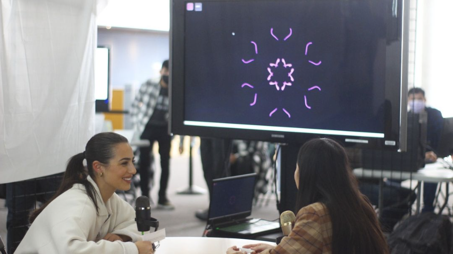

Daisy 7094 is an interactive artwork and team project to capture the essence of human voices and transform them into vibrant kaleidoscopes based on volume, pitch, and silence. Two particiants would have a conversation into their own microphones that are connected to separate laptops. From there, each particiants' voice would generate a kaleidoscope. Finally, both kaleidoscops would blend together and viewable in the future from the web.
Daisy
7094

Transmutation of voice into visuals
How do we show something we can't see?
During the development process, our team struggled to land on a unique visual representation for voice. We had a couple of ideas such as 3D terrain generation similar to The Coding Train's idea but we struggled to figure out a viable system to combine two people's voice into one. After looking for more inspiration, I stumbled across another video by The Coding Train where he made a fractal kaleidoscope using p5.js. My team thought the idea showed potential so I began to develop a couple of prototypes.



A daunting intoduction to web sockets
The final step was to develop a webapp to allow both microphones to independently upload their voices and kaleidoscopes to our server. While the rest of my team slammed their heads against a wall trying to configure a connection to our Simon Fraser Univerty's student available servers, I needed to figure out a way to show the real-time creation of the kaleidoscopes. At this point in time, I had barely touched HTML and CSS.
Luckily, since p5 was JavaScript library, it wasn't too difficult to implement it into a website. Once again, The Coding Train saved me with his tutorial on using Node.js to create WebSockets for communicating between the microphones and our server.
Final thoughts
Overall, I found this project to be quite challenging because this was my introduction to design processes and graphic programming. It was an awesome experience to apply my programmuing knowledge into the realms of graphics and learn a couple of new technologies like Node.js. I was able to get the WebSockets running smoothly while the rest of my team perfected the kaleidoscope and supporting webapps. Our project was well received by the professor and participants during exhibition day. Lastly, credit to my teammates Joel, Sandy, Michael, Benson, and Axel for being an awesome team.
